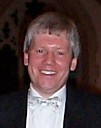

David Burgess - WCMF Director of MusicDavid Burgess has recently been appointed Director of Music of the Winchester and County Music Festival, having conducted the concert in Romsey Abbey every other year for the last 15 years, often including pieces that have not been previously performed in the Festival. Such works include Malcolm Archer’s Requiem, Pergolesi’s Stabat Mater in its SATB version, Karl Jenkins’ Stabat Mater, and Bob Chilcott’s Requiem.
David Burgess is Musical Director of the 100-strong Botley Choral Society and has led the choir in numerous successful performances. He has established links with a number of local ensembles who now regularly perform with the choir. A recent ‘Baroque-Fest’ of works by Vivaldi and Pergolesi attracted capacity audiences at two venues. Carmina Burana is planned for December 2017. David was born, educated and trained in Hampshire, and was one of the early recipients of a County Music Exhibition. He read music and education at King Alfred's College, Winchester, and studied the organ with Christopher Gower and David Thorne at Portsmouth Cathedral. David holds Diplomas in piano performing, teaching and accompaniment and teaches piano, recorder and class music in four local schools as well as running a thriving private teaching practice. David is Director of Music at All Saints Church, Botley, where he has established a monthly programme of musical events as well as being Musical Director of the bi-annual Botley Music Festival. There has been a recent influx of children into the choir, which has added a new dimension, bringing membership up to nearly 40! He is a member of the Society of Recorder Players and has conducted the Wessex Branch in addition to guest conducting at the London, Guildford and Dorset Branches. David directs the Upham Recorder Orchestra, affectionately known as ‘URO’. This is a community venture which provides an opportunity for adults and children to make music together. Talk to him about Scottish Islands, Champagne and card-playing and you will notice more than a little sparkle in his eyes. |
 |